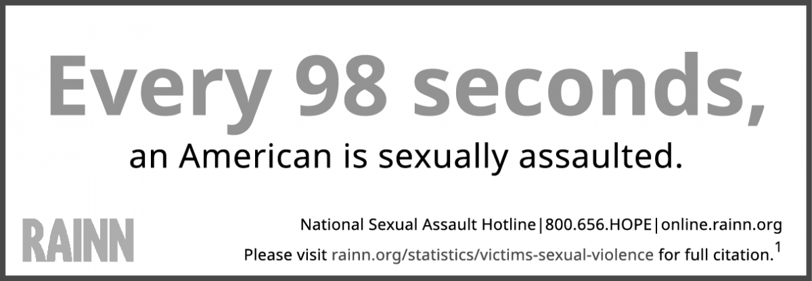

Sexual assault, a type of sexual violence, is a term that applies to a broad range of forced and unwanted sexual activity. It includes attempted rape — unwanted fondling or sexual touching — and rape, generally defined as penetration of a victim's body against their will. Sexual assault can involve forcing someone into non-consensual sexual acts by way of manipulation, physical or emotional coercion, or psychological force, including threats or other means of intimidation. Whatever form sexual assault takes, it's important for victims to realize that it's not their fault.
Sexual assault is a far too common problem in our country today; RAINN (the Rape, Abuse, & Incest National Network) recently reported that someone in the U.S. is sexually assaulted every 98 seconds. But sexual assault shouldn't be regarded as ordinary or inevitable — by understanding and addressing the problem, we can do something about it. According to RAINN, rates of sexual violence in the U.S. have dropped by more than half since 1993. That's encouraging, but our society still has a lot of work to do before we can list "sexual autonomy" among our national virtues.
The vast majority of sexual assaults go unreported and unpunished. RAINN reports that nearly 70% of victims don't inform the police and that a mere 25% of reported assaults eventually result in an arrest.
According to the National Institute of Justice, factors that commonly prevent women from reporting attacks include distrust of authorities and fear of blame. About one in six men suffered sexual abuse in childhood, according to statistics provided by 1in6, an organization dedicated to providing resources and support services for victims. Male Survivor, another organization that provides support for sexual assault survivors, explores how male victims face different types of stigma stemming from stereotypes about machismo, sexual desire, and what it means to "be a man." These antiquated notions, prevalent in today's society, can prevent men from reporting unwanted sexual activity.
*Total percentages exceed 100 because some victims had multiple assailants.
**Intimate partners include current and former spouses, opposite-sex and same-sex cohabiting partners, boyfriends/girlfriends, and dates.
Most victims of sexual assault know their assailant on some level. As reported by RAINN, approximately seven out of ten sexual assaults are committed by someone the victim knows. This could be another factor contributing to underreporting; a victim who, out of fear they'll be ostracized or won't be believed, refuses to tell anyone they were assaulted by a stranger is even less likely to report abuse from a significant other, a family member, a teacher, or a classmate. This unfortunate truth stems from victims' ill-founded assumption that they are less likely to be believed in such a situation ("your dad/coach/English professor would never do that") coupled with the fact that the survivor will likely have to endure further interaction with their assailant by virtue of their relationship.
In light of the fact that most victims know their attacker, it makes sense that most incidents of sexual assault occur in victims' homes. According to RAINN, at the time of the incident, victims are most often "sleeping or performing another activity at home." People often feel safest when they are at home with family and friends, but these statistics reveal a different, much more disturbing story.
Colleges and universities around the country are taking steps to prevent incidents of sexual violence on campus. By increasing the presence of security officers, initiating bystander intervention programs, and educating students on the meaning of "consent," schools are working to ensure the safety of their students, faculty, and staff on campus. Although responsibility for an attack lies solely with the perpetrator, there are ways you can reduce your risk of becoming a victim. Check out our list of basic safety guidelines below for things you can do to help protect yourself from sexual assault.
If you've identified that your partner exhibits controlling or aggressive behaviors and you're afraid to address these issues within your relationship, it's time to get help. Victims often don't realize the dangers of their situation until it's too late — the dynamic between the abuser and abused is strategically designed to discourage the victims from acknowledging or addressing the problem.
Intimate partner abuse and violence are never okay. They're more common than you might think, and it's wholly within your power and your rights to get out safely.